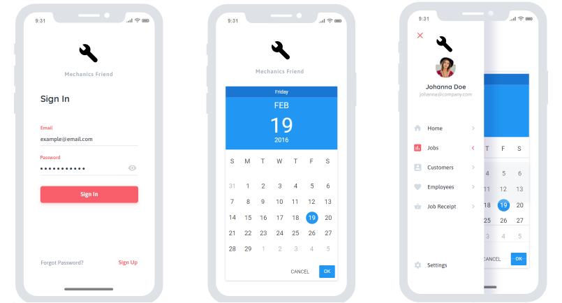
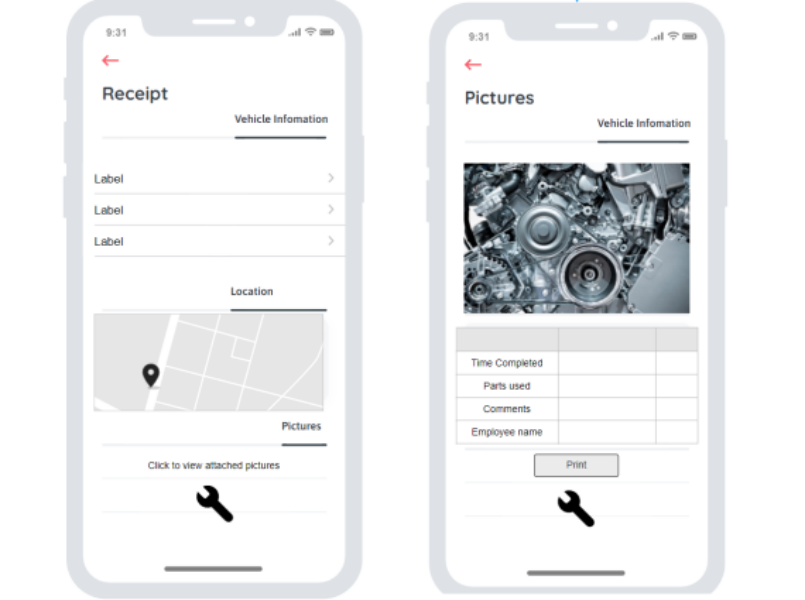

The A Team's Project Idea Overall description:
Application "Mechanics Friend"
Mechanics Friend is a program designed with smaller businesses in mind, with two main applications: one intended for the Automotive industry workers and employers, and one for the benefit of customers.
For the industry workers, it will provide an easy to integrate time management system. Including delegating tasks and their locations and allowing workers to have proof of the work they carried out with photos ensuring this is easy to integrate with invoicing and inventory tools widely used across small businesses such as Xero is vital, as this application is intended to be used in harmony with existing systems. Mechanics friend will use a calendar, with the ability to segment portions of the day and allow the employer to delegate tasks to their employees, who will be able to see and use this to manage their day and log their times and completed works with accompanying photos.
For customers, Mechanics Friend is intended to increase transparency of a historically untrustworthy industry. Intended as an attachment to a e-receipt or invoice, Mechanics Friend will show the customer exactly what was changed. The state of the vehicle or part before and after the repair and the exact length of time the worker logged on said repair. This allows the customer to be aware of what they are paying for and promote good work practices from the automotive professionals. Currently whatever happens to the vehicle is explained (if prompted) by the business carrying out the works. By having tangible evidence of these works and customer can get a second opinion or question the business themselves.
Contents:
Group Processes And Communications
Aims:
The aim for Mechanics Friend is to create an affordable solution for small automotive businesses, an easy to integrate time management system with the ability to give customers more information. The most important feature is the receipt, in which customers can view the outcome and state of their vehicle before and after the completed works.
The defining feature of Mechanics Friend is the receipt feature, the implementation and functionality of this is integral to the success of the application. To properly achieve this, the program must be ascetically pleasing. Having the receipt look professional, with the information accessible and clear to the customer. Having this feature completed would be the first goal of the project, as it's the aspect in which most users will see of the application.
The second goal is to create a time management system that is useful to employers. It needs to differentiate from what an application like Google Calendar can do. Ease of use, ease of integration into current business systems (stock databases, invoicing and accounting systems) is vital. Creating a functional management solution is the second goal as it is the other main feature of the program.
As this application is aimed for smaller businesses, it also needs to be affordable. Whether the application is a small monthly subscription or a larger one-time fee with differing levels of service – creating a reasonably priced solution is the third goal of the project.
Back to top
Plans And Progress
What will Mechanics Friend do?
Mechanics Friend will give smaller automotive workshops an affordable management system to optimise their business and increase customer satisfaction. A login portal on start-up of the application will allow the program to identify whether the user is an Admin account (employer/manager) or a default account (an employee).
When first setting up their account, the employer can input employee emails for them to be sent a link to the application. Along with their link to download the application, the employee will also receive a unique code to identify to the program they are a default account involved with said employee. This is to ensure tasks cannot be initialised or edited without permissions from the admin. This is to ensure the information shown within the application is reliable and to prevent accidental changes by employee.
The management system consists of a calendar, that allows an employer to assign tasks and locations for these tasks. Each day can be segmented into 30-minute sections, allowing the employer to assign employees tasks and have a visual indication of the estimated completion time. Along with these tasks the employer can assign a location with a link to a commonly used Map application such as Google or Apple maps. A small description or any important notes to the employee can also be added to the segment. The receipt feature will also be included in the segment after the work has been completed and uploaded to the application. This will allow the employer to have a visual record of tasks completed and assigned. Within the admin client there will also be a section to add or remove employees, edit their privileges within the application, change emails and other personal information of staff.
In App view of Logs,Calendar and Jobs:
For a default account they will still be able to view the calendar, locations and tasks assigned to them, however they will also be able to upload information to these tasks. This information includes:
Photos -
Photographs taken by employees at a job site or during a job can be uploaded to the relevant section on the calendar. For example, during an oil change a picture of the old filter can be uploaded, along with a picture showing the reason why it was necessary to change. A new filter can be installed, and a picture uploaded to document this.
Comments -
Comments can be uploaded to segments of the calendar to give the customer information on exactly what was done and why.
Time -
The exact time of starting the assigned task, and finishing can be uploaded by the employee and will be taken from their mobile devices time.
This information uploaded by employees will be used to create a printable pdf receipt. This receipt can be attached alongside other invoicing programs receipts. It’s not intended to include pricing or cost of parts. This receipt is purely for the customer to be able to see exactly what was done on their vehicle and why. This document will include the photos, times and comments uploaded by the employee.
In App view of Receipts and Job Photos:
How we will do it?
Since all four of us are on our way to leran how we gonna use the knowledge we gain through these courses our attempt now is to describe it the best possible we could at this moment of our knowledge about the subject.
As a first step we had this great idea of Lachlan's to develop a programm called "Mechanic’s Friend" which is application for both users and companies. It delivers a service of detailed, traceable description of mechanic work done on a customer’s vehicle.
Next step involved further development of the idea and exploring the ways of delivering the final product. This helped us all to better understand the programme and broke the whole process into smaller pieces which we worked out in even smaller details.
In this process we assigned the roles to each member of the group, and we further developed our understanding about practical part of creating this program and bringing it to life.
This movement of project involved heavy research of similar applications, process of actual delivering the application, formal and final look of the application, user interface and experience questions and finally possible investors and the way of placing our product in the market.
After this the proper business analysis will be conducted to answer all the questions about potential competitors and similar applications. Market size and possibilities are also part of this study. Data collected at this stage will be crucial to further development which is programming.
Before actual programming and delivering the application itself. It’s important to assemble all the information collected in previous researches. Collection of this information will include all the data connected to User Interface and Experience, all the data from business analysis and potential clients, all data collected on the aesthetics of the application (layout, colorschemes), and the developement of application too.
This process could be called pre-developement and it should be taken just before developement.
This is the point where we realised this will be crucial issue for us, as we are faced with limitations in our programming skills.
We decided that we will hire team of professionals (developer), since we are still on our way to becoming them ourselves.
Once developers are hired the planning with the team will take place. This planning should include the timing of delivery of application and all design and user interface clarifications. From colour schemes to decisions about final look of application
Once this is all clarified back-end development can start. The website can be created and all the necessary designs formalized, accepted and finished. All aspects of the façade of the application; from colour schemes to icons all needed refining. After this preparation is finished creation of application can start.
Front end development is the most important stage in finalising all the research, analysis and creating the final look of application and website supporting it. This stage requires a lot of adjustment and coordination until desired look and form of application achieved.
This stage includes all the testing and debugging and making sure that application is ready for use.
Before this step is taken, we should be aware of the required funds for this application or the necessary steps to develop it without funds if required.
Last step in this process will be establishing support and possibility to upgrade.Also collecting and producing all necessary documentation for the final release
The hired crew will be designated the following jobs:
WRITING CODE:
We learned that this process is done through writing computer code, which is then transferred to machine language using a type of program called a compiler. This assigns the function of the program and is compiled to performed tasks.
This extremely technical part of job must be done by professionals. However, we as a team developed every step and every scenario of the programming process just without including the proper code for it. The photos above are examples of how the program would look for a mobile user.
TESTING:
After this we went into discussion of how we will test the program. When the program has been fully written the application will be run through a series of preformulated tasks with the programming team .The aim of this is to check for errors in the design of the program.
Then debugging will begin, this is the first test the program will go through to ensure it’s running currently. This includes; checking the code itself, running the program on different platforms and remote machines. This will be performed by programmers so they can oversee the process
Next step in our plan is another test of the program by another team of programmers. This is usual practice in the industry and gives a wider range of feedback. This ensures our program is as efficient and effective as possible.
The next stage of testing involves ordinary users. We will take feedback from individuals trialling the program. We can use this feedback to improve and further develop the current state of Mechanics friend.
BUSSINES ANALYSIS
An important part in developing and finalising our idea is Business Analysis of the project.
Mechanic Friend's target customers are car owners and auto repair companies. This is an application with a very broad audience. Promotion is a key issue.
How to let more people know and understand this application? How to get people to accept and use the app?
Of course, we can learn from some similar applications and get to know how they are promoting their application.
For example, ‘CARFAX Car Care':
This application can be regarded as a popular car maintenance application. First of all, the company has produced a sophisticated website, which mainly describes the features of the application and related contact information, and more importantly, it also provides many users' evaluations of this application, which is a good way to attract new client. The next step is to use some social media platforms to promote the app, such as Facebook, LinkedIn, and Twitter.
The above methods will be presented to potential consumers in the form of text and pictures, also short videos will be part of presentation materials. Advertisement material must highlight the characteristics of the application in a short but effective form. Using animation in presentation video makes presentation easy on customers and it's a great way of approaching presentations.
We as "The A Team" will use the page of our Assignment on Git Hub to present it through web pages and within our team we will make some interesting and short video presentation with animations for purposes of presenting the application to potential customers.
Once potential founding and placement on market sorted we can start executing our next step which is bringing application to life with professionals
https://www.familyhandyman.com/article/best-maintenance-apps-for-your-car/
https://www.carfax.com/Service/
FORMALIZATION AND FINANCIAL WRAP-UP
The step after this will include formalization of process and all needed documentation, where everything will be prepared for further placement of the program to be used by third parties.
Back to top
Roles:
There are definitely many roles needed in software development and in accordance with what we have and what we have to do our decision is that we will hire the roles of Software Developers since none of us yet have the knowledge to bring this programme to life.
Good Software development team apart from good team structure and positive attitude, needs to be effective and produce great results.
Our roles within "The A Team" were based on conclusion that we have to do the most out of what we have at the moment. We were taken the roles as follows:
Product Owner (Lachlan):
This is usually person who understands the best how final product will look alike and what needs to be included in it when it's finished. Apart from being a creative this person has to have good decision-making ability.
They communicate with clients and business analysts but also with development team to monitor the progress and final look of the product.
During the first stages of development Lachlan's role was determining all the nuances of the project because he was the idea creator.
It included development of application insights and the way application will look as a final product.
Project Manager (Dario):
Usual role of Project manager includes all executional strategies and monitoring during development. Organization and final delivery of project also: which means dealing with time frames and personnel involved in finishing the project successfully. This role requires good leadership skills and organizational skills too. Communication skills are crucial in this role because it must glue all the other roles into one productive unit.
Dario's role in this part of the project was organising that all the works has been done in timely manner and all the project planning is done so the next step could be taken.
Planning and further developement also was included in his scope.
UX AND UI designer (Aaron):
This role is the front end role of exploring the user experience and responsibility of ensuring user focused outcome.
Their role focuses producing the best possible experience while using the application. They are crucial connection between the software development team and end users. They help clarify to developing teams the user’s perspective.
Aaron took charge in further investigation about User Experience part of the application. That included all the investigations needed to develop the final look and "feel" of application once when all the works are done.
Planning was done in terms of communication with programmers in our next stage of the project so we can deliver the application which will be user friendly but also possible to be executed by the programming team.
Business Analyst (Kungpeng Xu):
This role is responsible for connection with clients and clarifying clear business goals. They are involved from beginning of the process and they can inform the client about every step and little detail.
Their job also involves research of market, competitors and defining target audience. In this stage of testing they are heavily involved in creating documentation and testing itself.
Kungpeng's role was to investigate and report business scope of the whole project. This included investigation with possible investors and business path that should be taken for this project to be successful in that aspect.
His investigation and reports included all the business data needed to develop proper analysis, from clients and end users, for our application.
Back to top
Scope and Limits
In this early stage with amount of time we had as a team we understand that certain features will take a long to be done and in accordance with that we made it our highest priority to develop the idea the best we can and prepare it for proper and clear handling to a software development team.
The main goal as a team at this stage of the project is to explain and develop the idea up to smallest and clearest bit. We will not include actual programming. Our job is to clearly define the application for software development teams and to clearly have an target to certain businesses as clients and to propose the idea to as many possible investors. Also, our scope includes research of user experience and how it might be upgraded in any stage of our prepared way of delivering this project.
This stage will clearly show all the steps in development of application but not woks included in bringing application to life. That's left for the next stage of the process.
Back to top
Tools And Technologies:
In research to this topic our team came to conclusion that some of the main and crucial things are not just research on experience of developers but end users, clients and investors.
This also made a question of enveloping a proper workflow and connecting all the dots into one final path. Questions about security and compliance are also the questions where we going to have to have a solid answer for future endeavours of our application.
And finally service reliability and overall performance of finished product.
These days one of the most important topics is security of data of our product and making sure that our user won't have any issues of that kind.
Next topic is connectivity with data management and handling the data. Our software needs to be compatible and capable to follow all technologies at current use and have a potential to follow dynamics of future.
Our goal is to make a user-friendly and secure product which will be easily adaptable with future changes.
That means lightweight product for end users but also an easily achievable product for our software developers with focus on usability and functionality as well as security.
All the members of "The A Team" don't have too much experience in this filed but proper research was done and understanding needed to further investigate the process. These processes are also the ones "left" for the programming stage of development. However, through our research we found out what will be needed for this stage of project.
These are some of the tools which will be used in further developement:
-Application Lifecycle Management (ALM) Tools
-Application Generators
-RIA Tools
-AngularJS
-Node.js
-Programing languages which are applicabale and industry standard like Objective C
-JS Frameworks
-CSS Frameworks
-DOM Frameworks
In the process of presentation of our application we will use all our knowledge already formed on the web page for purpose of our Assignment. That page has all the relevant information about project and planning how to bring the project to an end.
In further stages it's programmed to have an video presentation with animation so our investors and end user can have a brief idea of what our application will do,and how it's going to be done.
Tools for this works will vary from text, table and photo editors, to tools for video editing: to bring the material to a stage where it's useful for our needs of promoting the app.
Our experience so far allows us to do this within the group where through our duties will be spread.
Lachlan had previous experience in video editing, Kungpeng will assemble all the data form business perspective, Aaron will do the same on the topic of User Experience and Dario will assemble that in a form appropriate to be served to potential customers and development teams in further stages.
Once done that will be uploaded to our web page.
Back to top
Testing
User Friendly Interactions Testing
Apart from above mentioned testing in terms of programming all sorts of testing needs to be conducted to make sure that end users have a great and useful experience with our application.
Towards the final stages of the project proper web page will be developed with all connections to our application
As a Beta Stage product should be offered to certain clients to try and send us feedbacks with limited time of use. If client is happy the reduced price should be offered to that customer for helping in development stage
To make this application more User friendly it will take a lot of time, especially to get it to the fine-tuned point. Firstly, we have make sure we are able to take community feedback from everyone who uses the “Mechanic’s Friend" application designed by the A-Team, after our all testing in terms of programming is done.
This will allow for us to ensure that we smooth out any of the bugs in our code and can see what the community would like for us to add in. Whether it is a 3 lined bar that allows you to open to multiple tabs like a slider bar, or even a quick search option. Another useful feature that we could add into our application would be a Timed Ticker. That feature would count how long a person has been inactive on the application and decides if it stores the information previously entered into it as a draft or to reset back to the main menu so the user can either return to what they were originally doing or come back to the application another time and find something else in case they had further things needed to research. This would also help with unfortunate events of losing the network.
A lot of the UI would come from a phone application as websites genuinely don’t need much touching up. It's pretty much a paste and go situation when creating a website, so one of the ways you can make your website stick out is by creating quick tabs that people can click on to give them access to anything that they might want to know about a certain part of a car, or how to repair something on another car.
With the phone, it would be easier to have everything set up to a history or a search engine that you can refine what you’re looking for in that particular client case. This will allow the user/customer to see photos of works undertaken. Then all the data would be uploaded to website and populated for access in that form.
In this process the programming of the code team will be consulted and workshopped about the final look so they can deliver it in desired form.
A good language to use would be C or C# as well as HTML as this language of code allows for more complex algorithms and is being used in a lot of today’s day to day applications and is needed not just for the phone application but also the website creation as well.
Back to top
Timeframe
Table 1 (Planning stage)
| Name and Role | Week 9-16th May | Week 16-23rd May | Week 23-25th May |
Lachlan Product Owner |
-Brief description, -Topic, -Motivation, -Aims, -Plans and Progress, -Tools and Technologies -(Research) |
-Scope and Limits, -Timeframe, -Tools and Technologies (Final), -Risks |
-Group Processes and finalization, -Report |
Aaron UX AND UI designer |
-Roles, -Tools and Technologies, -(Research) |
-Scope and Limits, -Timeframe, -Tools and Technologies (Final), -Risks |
-Group Processes and finalization, -Report |
Dario Project Manager |
-GitHub, -Landscape, -Tools and Technologies, -(Research) |
-Scope and Limits, -Timeframe,Tools and Technologies (Final), -Risks |
-Group Processes and finalization, -Report |
Kevin Business Analyst |
-Project Description, -Tools and Technologies, -(Research) |
-Scope and Limits, -Timeframe, -Tools and Technologies, -Risks (Final) |
Group Processes and finalization,Report |
Timeframe Table 2 (Developement Stage "The A Team")
| Month | Task | Roles |
| June | -Bussines Analysis | All team members |
| July | -Creating UI and UE designs and pre-developement
-Money sourcing (Founding) |
All team members |
| Avgust/September | -Hiring Developer and preparation with developer | All team members |
| November | -Backend Developement | All team members |
| December | -Frontend Developement | All team members |
| January | -Finalization and lounch of the project -Revenue and Risk management |
All team members |
Back to top
Risks
From the analysis of our project idea, as a team we can confirm that this application is to provide some important information for the customer, which comes from their car. We can also define this as the customer's personal privacy. This is related to whether the application is safe or reliable. It is also a key risk for operating this app. As it is not only contains the customer's personal information, it also records the employee's personal information as well. If the application is invaded by hackers or network viruses, once the data in the application is lost, it will lead to serious consequences.
For example, if the customer wants to compensate the corresponding loss, the company who created this app would be sued in court, because they have not abide by personal privacy. Therefore, creating a secure application system is the most critical step, but it is also the most difficult task, because the relevant professional IT worker are required to keep update the system.
Nevertheless, some applications will still be invaded by viruses, what we can do is to maximize the defense system as much as possible, so it can be repaired in the shortest time.
Another risk is the management system of the database. As mentioned above, the data may be invaded by the external. However, the internal management errors may also lead to data loss, such as sudden paralysis of computers or related devices, which would make some important data not being uploaded to relevant locations in time. Of course, this is a potential risk, which depending on whether the company's devices are regularly checked and updated.
One of the biggest risks for our application is occurring before it's even started to see a daylight, and that's funding.
Funding to develop the application is crucial, since we as a team need to hire an developer, because we are not capable to develop it ourselves. Even if that first step is overcome we need to clarify the way we will get the revenue from the application, the way that we will find customers to help us through beta stage, the way to deal with selling and buying the app, and disputes when and if they arise. All these are the clarifications which are all risks to our application development. Theur development can seriously harm production of our idea
Back to top
Group Processes And Communications
As a custom from previous Assignment The A Team comminicates through Microsoft Teams application.
Frequency of meetings is two times per week and on a present meeting we always discuss tasks which need to be done and finished before next meeting. If certain tasks couldn’t be finished for any reason those reasons would be discussed and issue sorted by spreading a workload to other members of the team of by extra research and mutual help through advises.
Team spirits are great and we all believe that we can deliver the project like this in timely manner to be up to a acceptable quality.